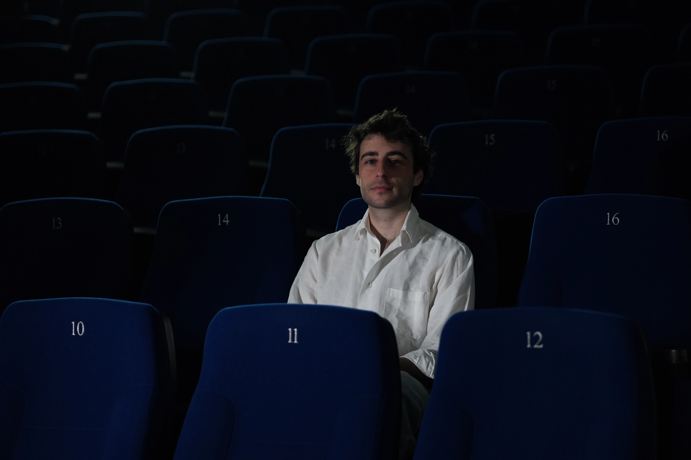
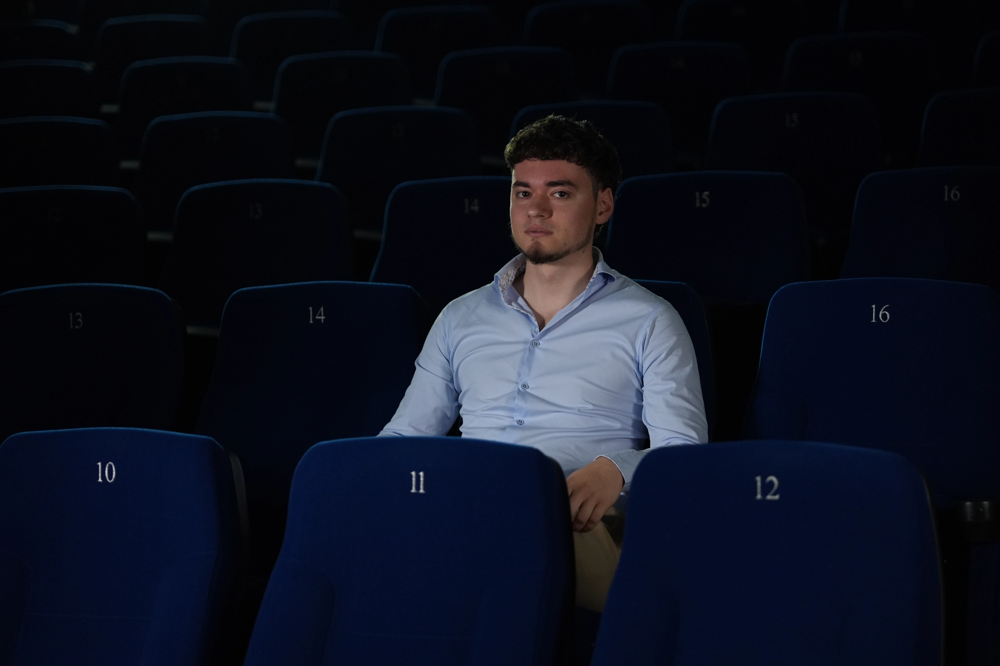

The people · The intent
Three founders, four collaborators, one shared frame. Below: the people who make the company breathe.
[ Founders ]
[ Team ]
The hands, the wires, the words. The people without whom nothing reaches a screen.

Communication Manager
Gabriele Crasci, born in Lugano in 2000, left his office job at age 22 to pursue a career in film. He studied at the International Conservatory of Audiovisual Sciences (CISA), where he earned a degree in Visual Design in 2024, before specializing in editing and post-production, his main passion. His work focuses on experimental films, in which he explores and combines contemporary visual languages. At the same time, he works in advertising, collaborating with local businesses.

System Administrator
Thomas Zaffalon, born in Lugano in 2003, studied at CISA, where he obtained a diploma in Visual Design in 2024 alongside Dario and the others. He then enrolled in the Bachelor of Informatics at USI, spending his third bachelor year at Sapienza University of Rome, where he broadened his technical and academic path. Today he manages the company's entire IT infrastructure, from internal systems to web platforms. His work connects audiovisual sensitivity with software, web architecture and digital operations, giving PoPaCi the technical backbone behind its online presence. He also designed and built this very website.

Junior Producer
Mauro Paolino is an Italian director, producer and screenwriter. He began his career writing film reviews for local and national publications, including Tom's Hardware Italia, Mad for Series and The MacGuffin. In 2013, together with Simone Galoro, he founded Carmel Productions, dedicated to making zero-budget short films. His first feature film, Croccantini, was made in 2017. Shortly afterwards, he began developing Il bambino, i due furfanti e la strega, a horror film. Paolino attended and graduated from CISA in Locarno, where he had the opportunity to experiment with new approaches to writing and directing. In 2025, he served as executive producer on the short film Anida, directed by Arianna Currao and Cesare Scorza.

Technical Manager
Davide Macchi (Varese, IT, 14/05/2002) grew up between Italy and Canton Ticino, developing a path that combines scientific and artistic studies. His versatile personality and cross-disciplinary technical skills led him, in 2025, to graduate at CISA in Locarno, where he found in editing and post-production his main creative strength. His graduation short film Tusen Toner, on which he worked as editor, was awarded the Pardino d'Argento in the Pardi di Domani section at the 78th Locarno Film Festival.